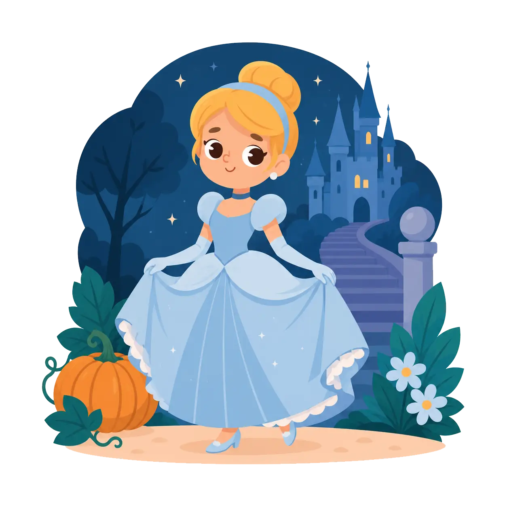
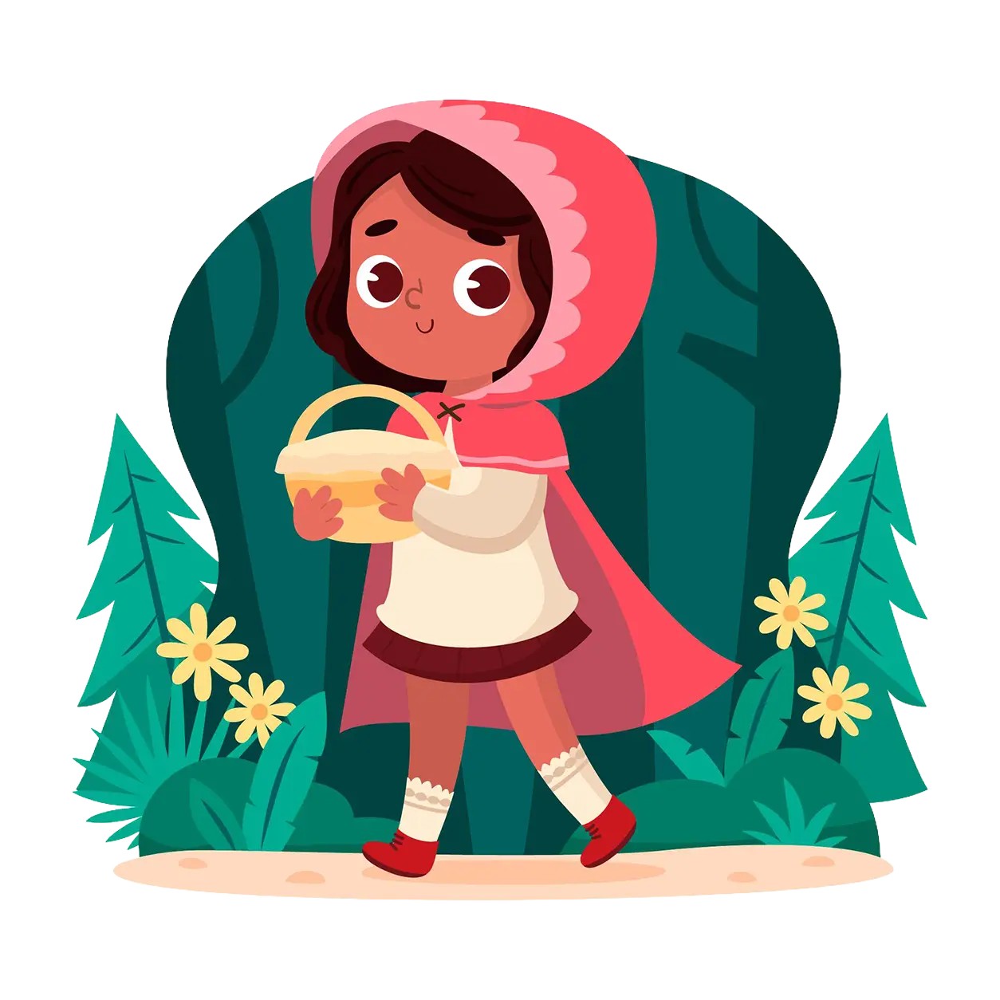
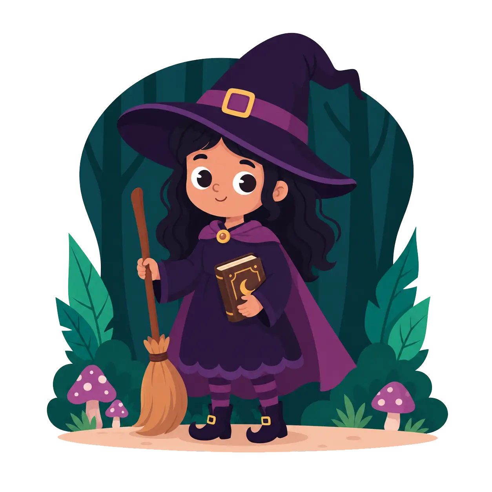
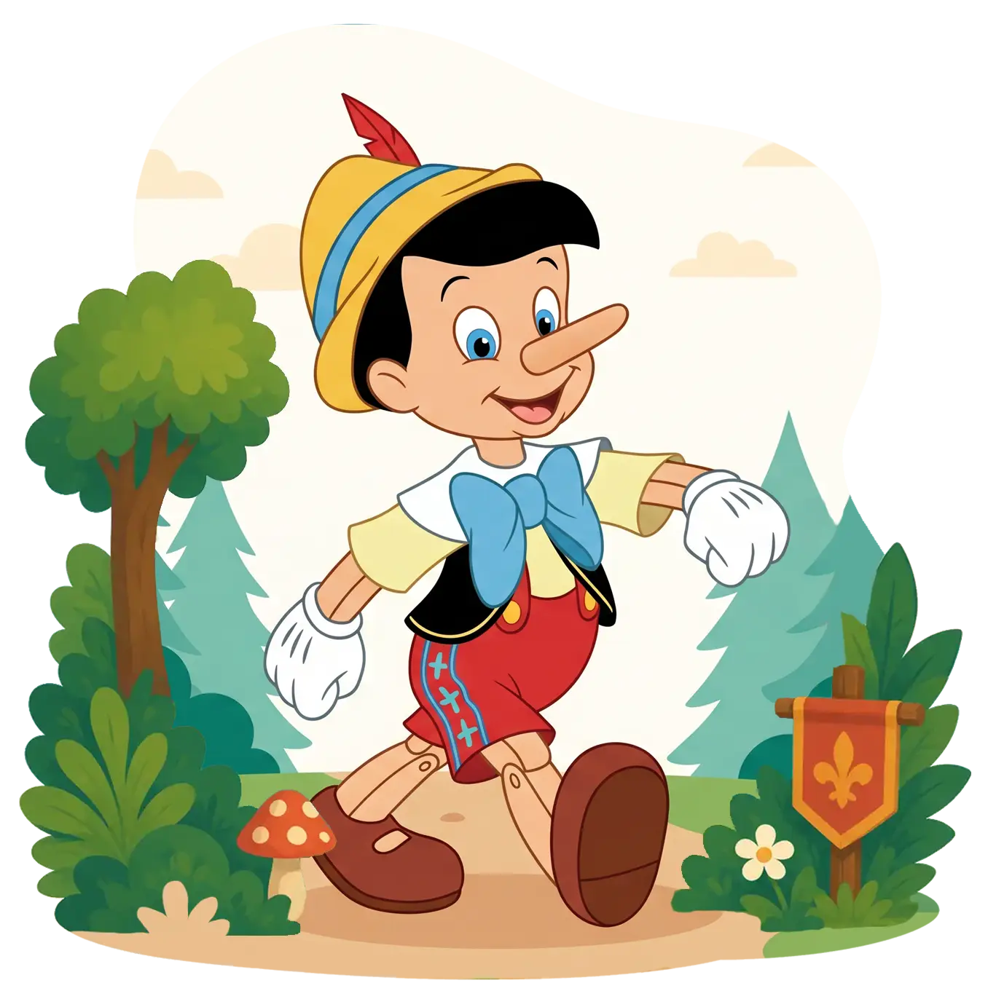
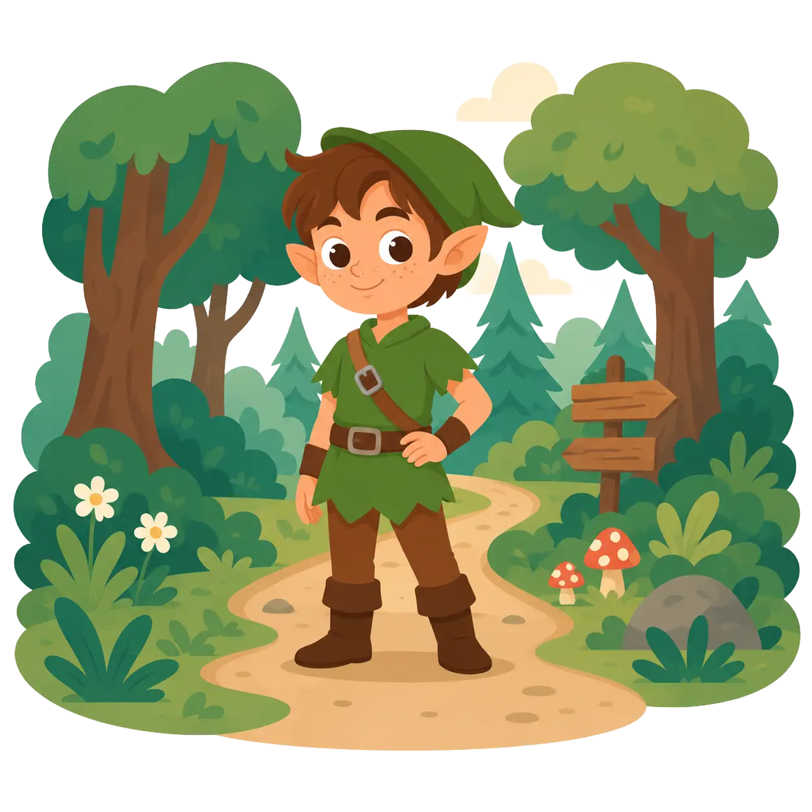
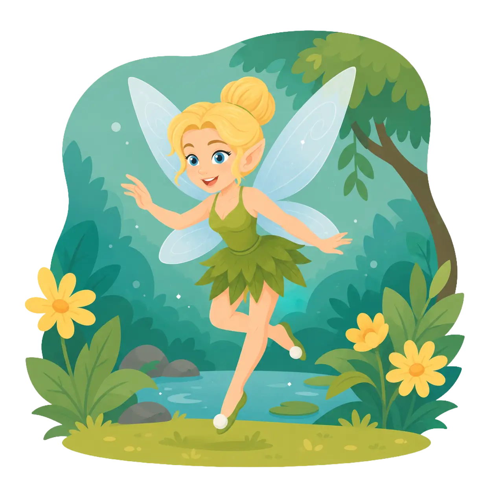

Personagens do Universo Infantil
Para representar um personagem, é preciso refletir sobre as seguintes questões:
- Que idade tem o personagem?
- Em que lugar o personagem está?
- O que o personagem está fazendo?
- O que ele gosta de fazer?
- Este personagem é alegre, triste, agitado ou calmo?
Agora, conheça alguns personagens importantes do universo infantil

Cinderela
Uma personagem famosa dos contos de fada. Observe algumas características dessa personagem: estilo da roupa, cabelo e acessórios. O que uma artista deve fazer para representar bem esse papel?

Chapeuzinho Vermelho
É caracterizada por usar uma capa com capuz vermelho. A história dessa personagem se passa em uma floresta, quando a menina decide visitar a avó que está doente.

Bruxa
As bruxas fazem parte das histórias infantis. Como uma pessoa que quer desempenhar o papel de bruxa deve se vestir?

Pinóquio
Um dos personagens mais conhecidos da literatura infantil. Você já pensou em representar o Pinóquio?

Peter Pan
Um menino alegre e travesso, que vive muitas aventuras. Que tal representar o Peter Pan?

Tinker Bell
Que elementos são importantes para que alguém possa representar a Sininho, ou Tinker Bell, uma personagem famosa da história de Peter Pan?